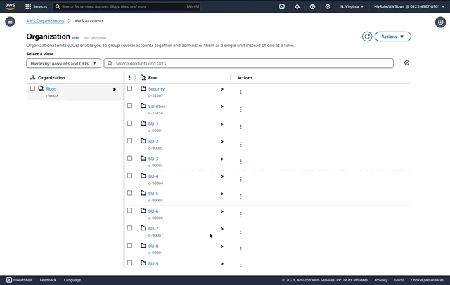
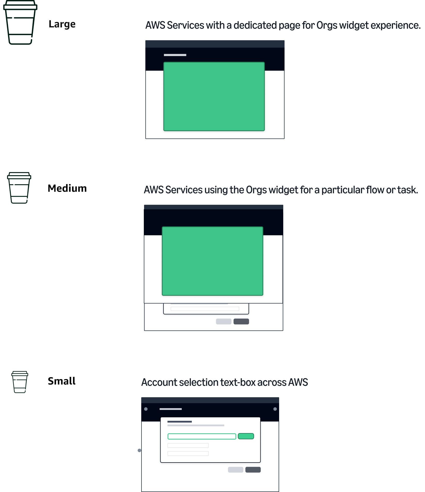
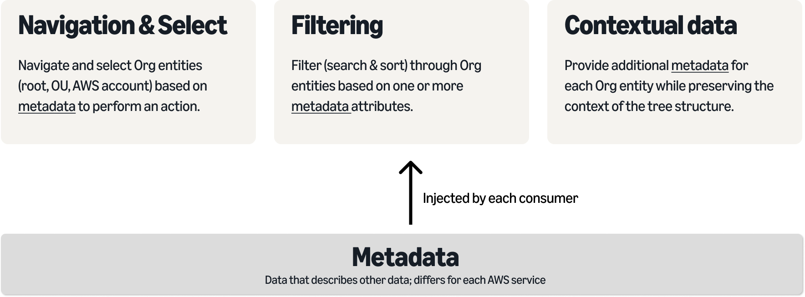
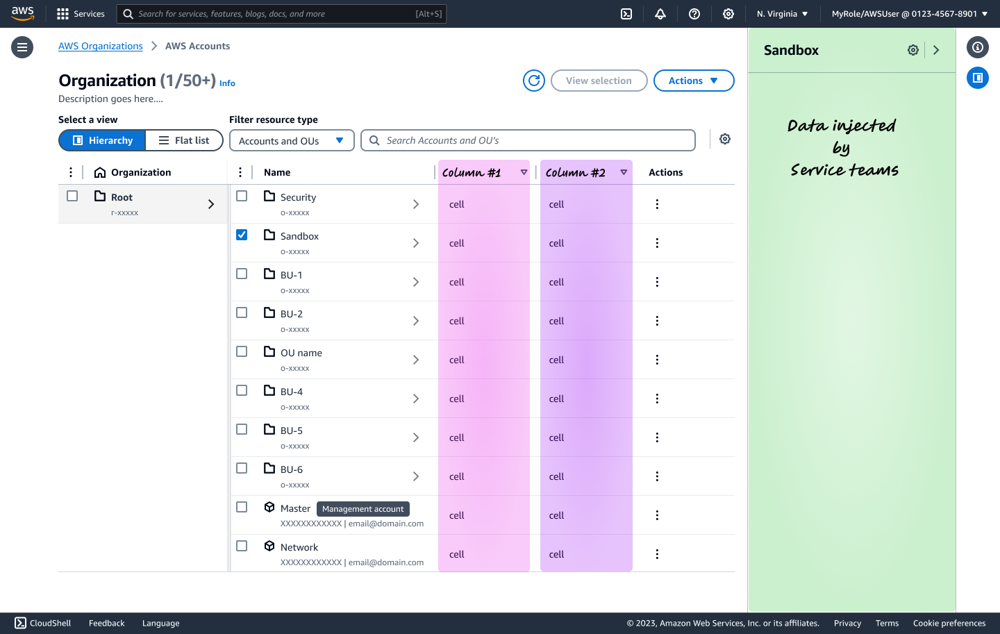
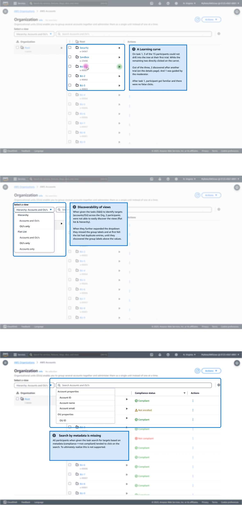

AWS Organizations - Centrally manage your AWS accounts at scale

Role
UX Designer
Collaborators
Erin Westfall
Shak James
Andrew Blackham
10+ UX designers
Description
AWS Organizations (Orgs) is a service that enables businesses to centrally manage and govern multiple AWS accounts. It provides policy-based control, consolidated billing, and hierarchical account structures for efficient multi-account management and cost optimization. From a design perspective, it provides a standard and consistent way to represent organizational structure across AWS.
CHALLENGE
The Orgs widget displays an organization's hierarchical structure made up of Organizational Units (OUs) and AWS Accounts. It helps customers centrally view, organize, and manage their account structure (create, invite, update) and enables multi-account management capabilities across AWS services.The Orgs widget aims to achieve several key goals:
- Consistent customer experience: Provide a consistent organization management experience across AWS services. This provides a seamless experience for customers using multiple AWS services.
- Development effort: The reusable Orgs widget component removes the need for each AWS service team to build their own organization management interfaces from scratch. This significantly reduces engineering time and effort across our distributed model of operations within AWS.
- Automated updates: Enable rapid rollout of new capabilities: With a widget, new features like increased account limits, improved search and filtering can be quickly made available across all services using the Orgs widget. This allows much faster delivery of capabilities that benefit customers across AWS.

However, the current Orgs widget (shown in Figure 4 which is currently being used by 12 AWS services (full list in Appendix:B-1) has not evolved over time with and poses limitations such as (by priority):
- As we scale to 50K accounts with project Boulder, the UX & UI needs to handle large volumes of data and enable efficient navigation, selection, searching and sorting across this data.
-
Growing number of use-cases across AWS services where the widget design and customizations do not meet the service use-cases. Looking across the use-cases for all AWS services there are four main categories of task:
- Selecting Org entities (root, OU, AWS account) based on some meta-data to take a necessary action on the entity. For example, Control Tower customers expect to see the compliance status for each OU and Account and take a relevant action on the “non-compliant” entities. Essentially this meta-data next to each Org entity helps their customers with decision making and helping them with their actions.
- Ability to select single, multiple, and nested entities across the Organization structure to take a relevant action(s). The primary persona of the widget (management account and Delegated admins) rely on bulk selections and bulk action to reduce the operational burden of their job.
- Ability to sift, search and sort through the Organization structure by relying on their meta-data and filtering criteria.
- Limitations and constraints of the current UX (e.g. lack of multi-column support, column resizing, column settings, sticky columns, select all and sorting, etc).
PROCESS
I categorized all AWS Service teams under categories based on their use-cases and the context of use. The services were categorized into sizes based on how they wanted to use the AWS Orgs widget in their console. There were 3 categories:
And their collective use-cases:

DESIGN
I opted to re-design this widget based on the miller-column pattern to handle data at scale where potentially we need to handle 50K accounts with this pattern. This design was highly debated over the related table pattern which was supported by default by Cloudscape (AWS Design system). Working backwards from the customers and their use-cases, better way-finding with a tree-structure, supporting multiple-views, scalable to multiple levels of tree structure, efficient sorting and searching made this pattern win over the default choice.

This design offered customization to each AWS service to inject their data into the widget. Service could opt for more columns as metadata or utilize the split panel (slides from the right) to show more details based on their selection.

RESEARCH
Since this pattern was introducing a new interaction pattern, I tested the initial version of the design to identify any pain-points and to reduce the risk for our dev-team to get started on the early work with this pattern. The usability study with 15 XXL enterprise customers containing 8 tasks highlighted the following findings:
The identified findings were addressed via a) designing more intermediary design states b) working closely with our accessibility team to make this pattern accessible and c)working with our backend team to help address the search functionality.